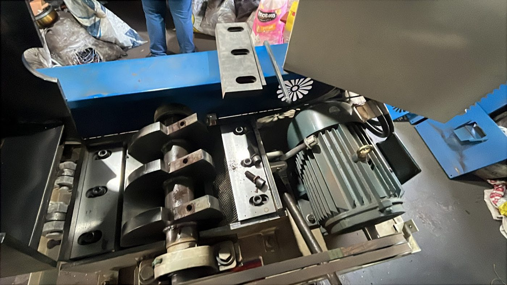
Manutenção e diagnóstico
- Manutenção preventiva e corretiva de máquinas
- Diagnóstico de falhas elétricas e de automação
- Troca e parametrização de inversores e soft-starters
- Parte elétrica de motores, bombas e compressores
MENOS PARADAS. MAIS INTELIGÊNCIA.
Manutenção preventiva e corretiva, contratos de manutenção com termografia e montagem de quadros para indústrias de pequeno e médio porte. Atendemos todo o Rio Grande do Sul conforme a demanda e enviamos quadros montados para todo o Brasil.
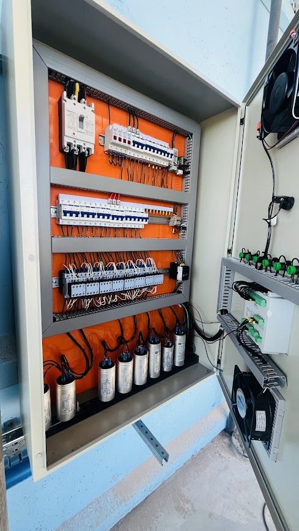
Nossos serviços

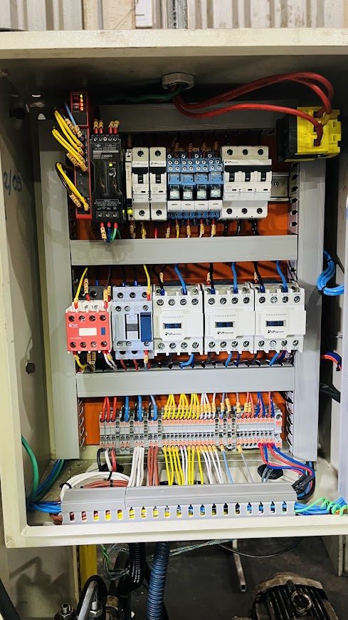
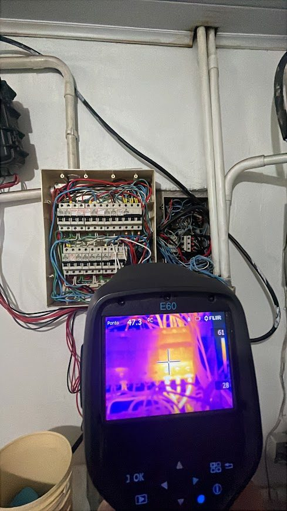
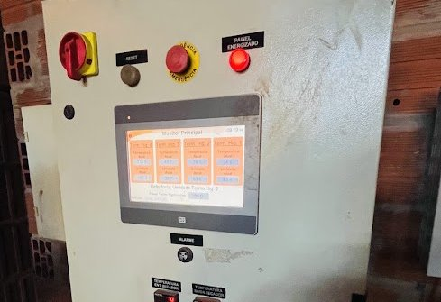
Laudos e adequações às NRs
Inspeções, laudos técnicos com ART e adequações às Normas Regulamentadoras. Conformidade técnica comprovada e documentada, do diagnóstico à entrega, em um só fornecedor.
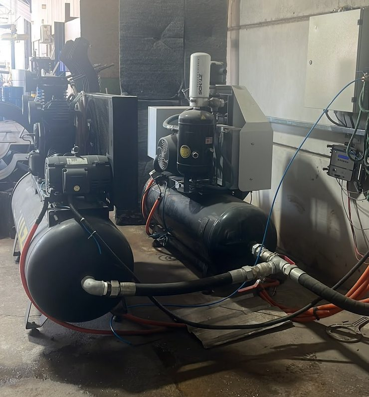
Inspeção de segurança em reservatórios de ar comprimido, vasos de pressão e caldeiras, com laudo conforme a NR-13.
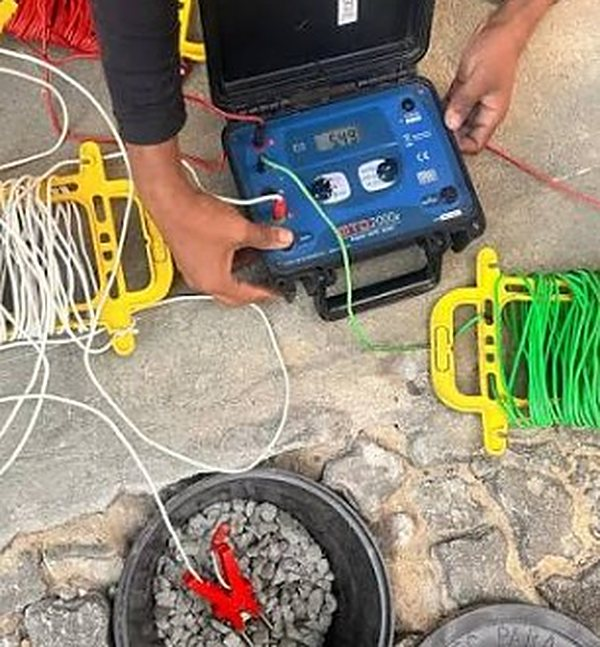
Inspeção do sistema de proteção contra descargas atmosféricas conforme a ABNT NBR 5419, exigida no PPCI e pelas seguradoras.
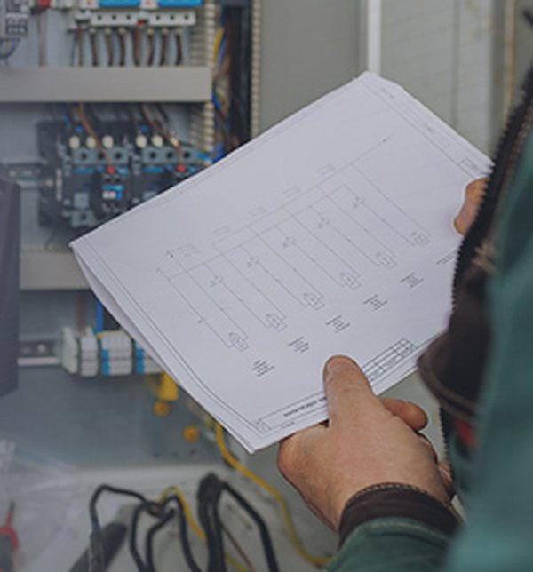
Obrigatório pela NR-10 (item 10.2.4) para empresas com carga instalada acima de 75 kW. Montamos e mantemos o prontuário atualizado.
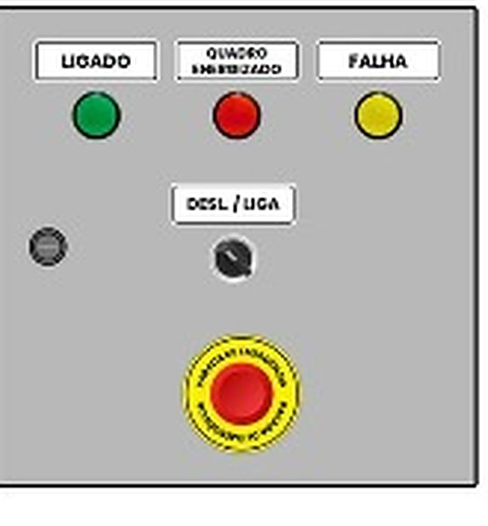
Diagnóstico das instalações e execução das correções, para que quadros e procedimentos fiquem seguros e dentro da norma.
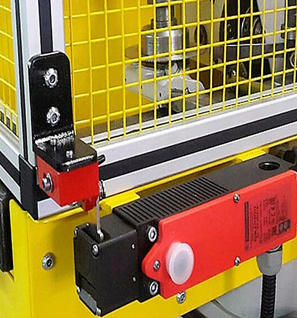
Apreciação de risco e adequação de máquinas e equipamentos, com a parte elétrica dos sistemas de segurança executada pela FR.
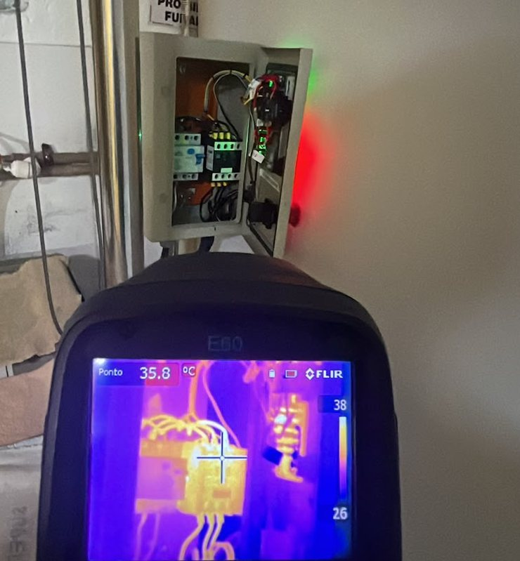
Encontra conexões frouxas, sobrecargas e desequilíbrios antes que virem parada ou incêndio. Executada pela própria FR.
Contratos de manutenção
Visitas programadas, mensais ou no ritmo que a sua planta precisa, para inspecionar quadros, conexões e cargas críticas. Você recebe um relatório com fotos, medições e prioridades; as correções são orçadas à parte, com condição especial para clientes com contrato.
Por que escolher a FR
Sobre a FR
Ser o parceiro técnico certo para indústrias em crescimento: manutenção elétrica e automação feitas com fundamento técnico, conformidade com as normas e transparência do orçamento à entrega.
O que combinamos é o que entregamos.
Nossos valores
Quem está à frente
“Uno a experiência do chão de fábrica às tecnologias que estão moldando a nova geração de negócios e da Indústria 4.0.”
Minha carreira foi construída dentro da operação, atuando diretamente com manutenção, automação, instrumentação e projetos industriais. Essa experiência prática me proporcionou uma compreensão profunda dos desafios enfrentados por equipes técnicas, gestores e empresas na busca por eficiência, confiabilidade e crescimento.
Passei a aplicar esse conhecimento na construção de soluções baseadas em Inteligência Artificial, automação de processos, análise de dados e integração de sistemas, unindo a experiência do chão de fábrica às tecnologias que estão moldando a nova geração de negócios e da Indústria 4.0.
Meu foco é desenvolver soluções que simplifiquem processos, eliminem desperdícios de tempo e transformem dados em informações úteis para a tomada de decisão, sempre com uma visão prática, orientada a resultados e baseada na realidade operacional.
Projetos IoT sob medida
Desenvolvemos placas eletrônicas e projetos customizados para monitorar equipamentos em locais remotos, como propriedades rurais, poços, reservatórios e estações de bombeamento. Os dados chegam ao celular em tempo real e o alerta dispara antes que o problema vire prejuízo.
Bombas de poço e irrigação, nível de caixas d’água, cercas e galpões. Ligar, desligar e acompanhar à distância.
Estações elevatórias, reservatórios e tratamento de efluentes: nível, pressão, horas de bomba e falhas.
Alerta imediato quando a energia cai em câmaras frias, aviários, bombas e equipamentos críticos.
Contadores de produção, paradas de máquina, temperatura de ambientes e consumo, integrados aos seus sistemas.
Avaliações no Google
Nota 5,0 · 22 avaliações no Google
“FR Elétrica & Automação se destaca pela competência e profissionalismo. Possui uma equipe técnica altamente capacitada, que entrega soluções com qualidade, precisão e confiança. Recomendo!”
“Serviço confiável, justo e qualificado. Com atendimento cordial e sincero. Transmite segurança e conhecimento técnico atualizado, que diferenciam dos demais. Recomendo!”
“Atendimento 10, precisei urgentemente e fui atendido.”
Entre em contato
A visita técnica inicial é gratuita. Respondemos em até 1 dia útil.